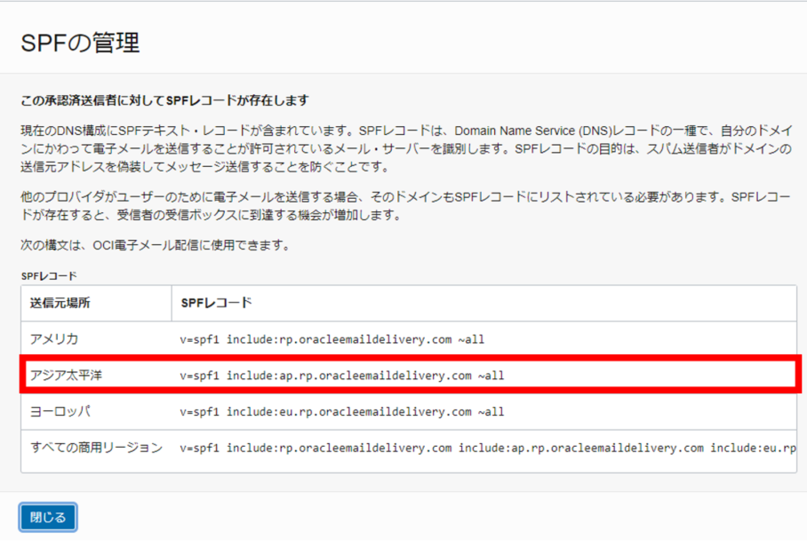
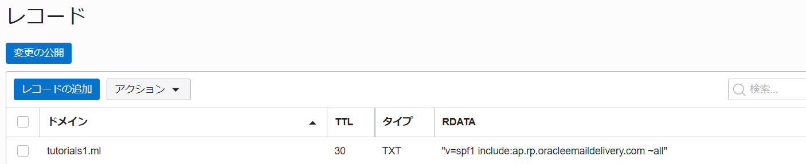
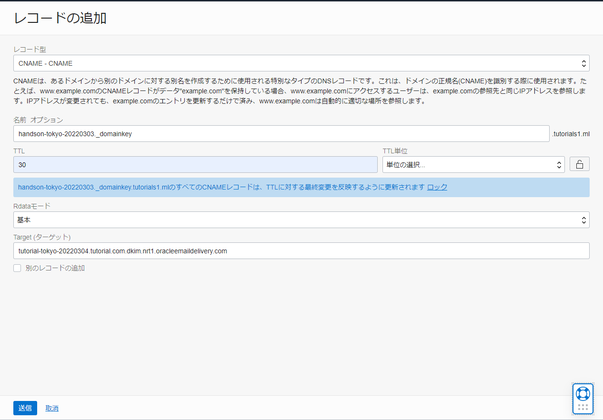

チュートリアル一覧に戻る : Oracle Cloud Infrastructure チュートリアル
このチュートリアルはEmail Deliveryを利用した外部へのメール送信(基礎編)の続きになります。 基礎編ではSMTP認証を使用しました。しかしそれだけではなりすましメールとみなされてしまう可能性があります。応用編ではSPFとDKIMの設定を行いメールの到達可能性を高めます。
所要時間： 約20分
前提条件：
- DNSサービスを使ってWebサーバーの名前解決をするが完了していること
- Email Deliveryを利用した外部へのメール送信(基礎編)が完了していること
注意: チュートリアル内の画面ショットについてはOracle Cloud Infrastructureの現在のコンソール画面と異なっている場合があります
1. SPFの設定
SPFを設定するには、SPFレコードを既存のDNSサーバーにTXT形式で実装します。
-
SPFを確認します。左上のメニューから
開発者サービス → 電子メール配信をクリックして、左側にあるApproved Sendersを押します。 -
そして作成した承認済送信者の右側にあるメニューから
SPFの表示ボタンを押します。
-
今回は東京リージョンで実施しているためアジア太平洋のSPFレコードを使用します。後で使用するためテキストエディタ等にメモしておきます。そして
閉じるのボタンを押します。  -
DNSサーバーにSPFレコードの情報を実装します。
ネットワーキング → ゾーンをクリックします。そしてすでに作成されているDNSゾーンをクリックします。今回のチュートリアルではtutorials1.mlのDNSドメインを使用します。 -
作成されているDNSサーバーをクリックすると、詳細画面が表示されます。少しスクロールして左側にある
レコードを押します。すると一覧のレコードが表示されます。 - レコードの追加を行います。
レコード型- TEXT - テキスト名前- 空白TTL- 空白Rdataモード- 基本Text（テキスト）- v=spf1 include:ap.rp.oracleemaildelivery.com ~all（先ほどテキストエディタに書いたSPFレコードを記入します）

-
送信ボタンを押すとレコードに追加されます。
-
レコードの変更の公開をおこないます。
変更の公開のボタンを押します。
-
きちんと登録したSPFレコードが選択されているかを確認して、
変更の公開ボタンを押します。
-
レコードが公開されると状態が
Unmodifiedになります。
2. DKIMの設定
DKIMを設定するにはDKIMを作成してからDNSレコードにその情報を公開する必要があります。
-
左上のメニューバーから
開発者サービス → 電子メール配信を選択します。そして左側に表示されているEmail Domainsをクリックします。 - Eメールドメインを作成します
Email Domain Name- tutorials1.mlCompartment- コンパートメントを選択します

Note
Email Domain Nameはご自身で作成されたDNSのドメイン名と同じにしてください。 - Email Domainの詳細画面が表示されます。スクロールして
DKIMの追加を押します。Step1のDKIM Selectorを設定して、Step2のGenerate DKIM Recordのボタンを押します。ボタンを押すとStep3のCNAME Record、CNAME Valueの値が表示されるので、テキストエディタに書きます。そしてCreate DKIMのボタンを押します。DKIM Selector- tutorial-tokyo-20220303

Note
DKIMセレクターの値はドメインに対して必ずグローバルで一意になっている必要があります。なので「prefix（接頭辞）-region（リージョン）-YYYYMMDD（日付）」で登録することが推奨されています。 -
DNSサーバーにDKIMの情報を実装します。
ネットワーキング → ゾーンを選択して、既存のDNSゾーンをクリックします。 - DNSレコードの追加を行います。
レコード型- CNAME - CNAME名前- tutorial-tokyo-20220303._domainkey（CNAME Recordの値を記入します）TTL- 30Rdataモード- 基本Text(テキスト)- tutorial-tokyo-20220303.tutorials1.ml.dkim.nrt1.oracleemaildelivery.com(CNAME Valueを記入します)

-
送信ボタンを押すとレコードに追加されます。
-
先ほどのレコードの変更の公開をおこないます。
変更の公開のボタンを押します。 -
きちんとCNAMEのDKIMレコードが選択されているかを確認して、
変更の公開ボタンを押します。 -
レコードが公開されると状態がUnmodifiedになります。
-
DKIMの設定がされているか確認します。 メニューから
開発者サービス → 電子メール配信をクリックしてEmail Domainを選択すると一覧が表示されるので、先ほど作成したEmail Domain名をクリックします。するとDKIM Signingの箇所がActiveになっていることが確認できます。
Note
Activeになるまでに時間がかかることがあります。 - メールを送信します。Email Deliveryを利用した外部へのメール送信(基礎編)を参考にMailx等で送信してみてください。そしてメールが送信されているか確認してみてください。
3. おまけ（電子メール配信メトリック）
電子メール配信メトリックを使用することで、電子メールがきちんと受信先メールサーバーに届いているかを表で確認できます。
-
監視および管理 → メトリック・エクスプローラーを選択します。 -
すると
メトリック・エクスプローラの画面が表示されるので、スクロールして問合せの編集ボタンを押して編集します。コンパートメント- コンパートメントを選択しますメトリック・ネームスペース- oci_emaildeliveryメトリック名- EmailsAccepted間隔- 1m統計- Meanメトリック・ディメンションディメンション名- resourceDomainディメンション値- tutorial.com

-
編集し終えたら
チャートの更新を押します。 -
きちんとメールが送信されていると、グラフに反映されます。

以上で、この章の作業は終了です。
チュートリアル一覧に戻る : Oracle Cloud Infrastructure チュートリアル